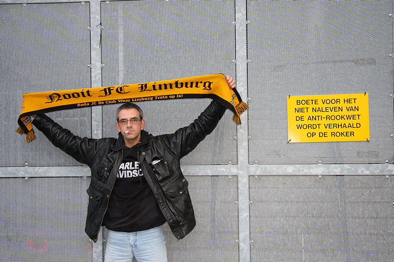

Streife Hornbach, bitte kommen...
Voor-overleg. De stemmen zijn merendeels pessimistisch.
Bijna vol gastenvak.
Rogier introduceert nieuw talent...;-)
Tekst van de sjaals: Nooit FCL.
Goed geslaagde choreografie van het FP op west.

In de eerste helft zien we twee angstig voetballende teams.
Sfeermakers op west.
Een van de schaarse kansen in de eerste helft.
Saeijs en Biseswar even knocked out.
Redding Castro op schot Biseswar die beter op de vrijstaande Makaay had
kunnen afleggen.
Onheilspellende blik bij Peter R.
Kah trapt de bal weg uit de gevarenzone.
Hier wordt een corner afgeslagen.
Oper weet Timmer niet te passeren.
Na rust is de bezieling bij Roda nog verder weg en kan Feyenoord beginnen
aan zijn eerste uitzege. Hier scoort Wijnaldum met een kopbal,
0-1, (53').

Even later een intikkertje van Fer: 0-2, (57').
Donkere wolken pakken zich samen boven het PLS.
Countergoal van Makaay via de lat: 0-3, (67'). Roda speelt voor sinterklaas.
Biseswar: 0-4, (70'). Roda is de bezieling van de voorgaande wedstrijden
kwijt en laat zich op ongelooflijk makke manier door het niet eens
briljante Feyenoord vernederen.

Twintig minuten voor tijd, (!!!), verlaten honderden supporters de tribunes.
Dit is ongekend.
Kans Cissé op een eretreffer, maar zelfs dat is Roda deze middag niet
gegund.
Na de wedstrijd plots palaver bij het gastenvak.
Een Rodasupporter die provocaties van de Feyenoorders beantwoordt wordt door
drie coppers in burger tot bloedens toe in elkaar geslagen
met knuppels en geboeid afgevoerd.
JP Saeijs was een van de aanwezige spelers in de Kickoff.

Toch nog vrolijke gezichten in de Kickoff.
Tja, je bent jong en een vette joint doet de rest :-)))))

Roken mag niet, FC Limburg ook niet!
Deze hing buitenkant oost (vakkundig verwijderd).
Maar het blijven mooie lichtmasten...
Foto's vanuit Feyenoordperspectief:
Feyenoord Foto Fansite